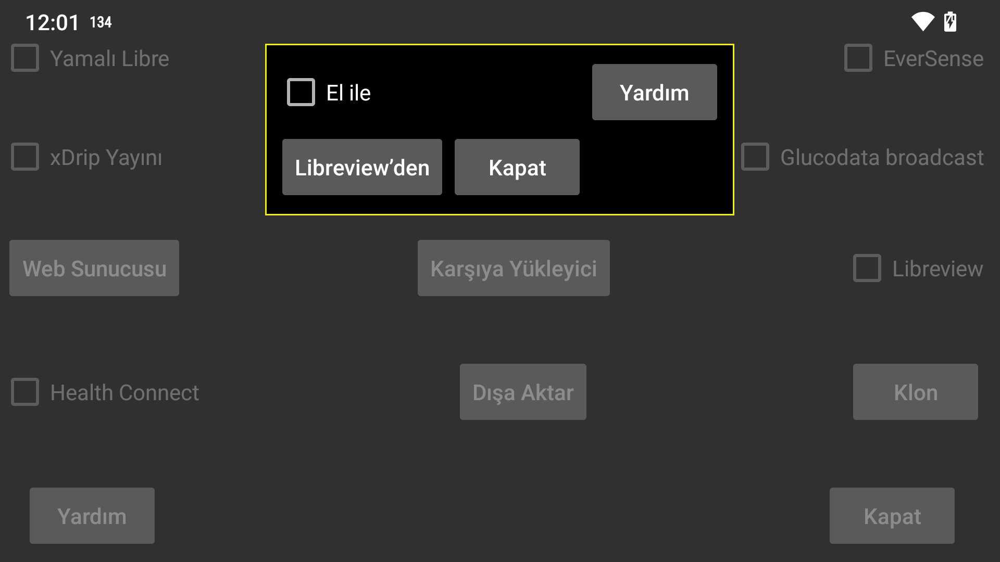

Freestyle Libre 3 sensörünü NFC aracılığıyla taramak için gereken Libreview Hesap Kimliği nasıl alınır? "Manuelolarak" seçeneğini belirlerseniz, Hesap Kimliğini manuel olarak girebilirsiniz. Ayrıca, “manuel” seçeneğini kaldırabilir ve "Libreview'den" seçeneğine basarak Libreview'den almak için hesap e-posta adresinizi ve şifrenizi kullanabilirsiniz.
Libreview Hesap kimliğini Libreview'den almak ve ardından hesabın e-posta adresini ve şifresini "manuelolarak" ayarlamak ve değiştirmek de mümkündür. Daha sonra "Libreview'e Gönder" seçeneğini ayarlayıp "Verileri Yeniden Gönder" düğmesine bastığınızda, veriler o Libreview hesabına gönderilecektir, ancak önceki/manuel olarak girilen hesap kimliği yine de sensörü NFC aracılığıyla taramak için kullanılacaktır. Bu şekilde Juggluco, verileri Abbotts Libre 3 uygulamasının kullandığından farklı bir Libreview hesabına gönderir.